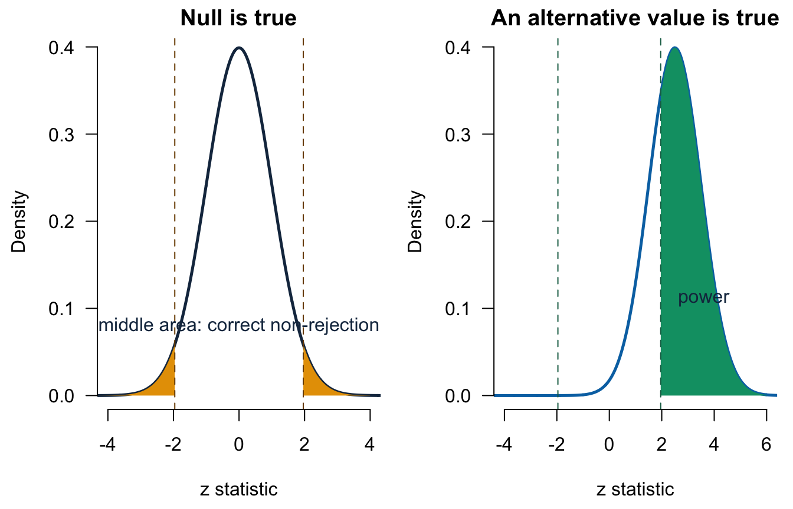

Lecture 10: Hypothesis testing, errors, and power
- complete and communicate a two-sided test against zero;
- distinguish a p-value, significance level, and test decision;
- describe Type I error, Type II error, and power in context;
- separate statistical significance from magnitude, practical importance, and causality;
- interpret the zero-null test printed for a regression coefficient.
Before class
Video preparation
Review Introduction to
Hypothesis Testing and watch
Examples Identifying
Type I and Type II Errors. Focus on two-sided tests, decision errors, and
why “do not reject” is not “accept.”
Review Mathematics Refresher: zero contrasts, inequalities, and standardisation if needed.
Suppose R reports the following coefficient row:
| Estimate | SE | t | p-value |
|---|---|---|---|
| -0.290 | 0.058 | -5.00 | < 0.001 |
State the hypotheses and give a careful one-sentence statistical conclusion.
Check your preparation
The default two-sided coefficient test is \(H_0:\beta=0\) against \(H_1:\beta\ne0\). Because the p-value is below 0.05, reject \(H_0\): the data provide evidence that the population-model coefficient differs from zero. A full interpretation still needs the outcome, predictor, units, held-fixed variables, population, and causal limit.
In class
Video explanations (review): Introduction to Hypothesis Testing and Type I and Type II Errors.
Why zero is the central benchmark
Many empirical questions ask whether a population contrast is absent:
- difference from a target: \(\delta=\mu-15\);
- difference in probabilities: \(\delta_p=p-0.50\);
- difference between two group means: \(\mu_1-\mu_0\);
- regression slope: \(\beta_j\).
In every case, “no difference” or “no linear association” becomes
\[ H_0:\theta=0 \qquad\text{versus}\qquad H_1:\theta\ne0. \]
Testing a non-zero benchmark can therefore be rewritten as a test of a zero-valued contrast. This common structure is the bridge from Basic inference to regression inference.
A complete two-sided testing workflow
Use the same sequence every time:
- Define the population parameter and its units.
- State \(H_0\) and the two-sided \(H_1\) before inspecting the result.
- Check the sampling and model conditions.
- Calculate the estimate and its SE under the null model.
- Standardise: \((\text{estimate}-0)/\text{SE}\).
- Calculate the two-sided p-value and compare it with the pre-specified significance level \(\alpha\).
- Report the estimate, uncertainty, decision, contextual meaning, and limits.
The significance level is a long-run decision threshold, commonly 0.05. The p-value is calculated from the observed data under \(H_0\). They are not the same object.
Example: a deal-proportion contrast
Define
\[ \delta_p=p-0.50. \]
The question is whether the finite-frame deal proportion differs from 50%:
\[ H_0:\delta_p=0 \qquad\text{versus}\qquad H_1:\delta_p\ne0. \]
Under the null, \(p_0=0.50\), so
\[ Z= \frac{\widehat\delta_p-0} {\sqrt{p_0(1-p_0)/n}} = \frac{\hat p-0.50} {\sqrt{0.50(0.50)/n}}. \]
null_se <- sqrt(p0 * (1 - p0) / n)
z_value <- deal_gap / null_se
two_sided_p <- 2 * pnorm(-abs(z_value))
c(
sample_proportion = phat,
estimated_gap = deal_gap,
null_standard_error = null_se,
z_statistic = z_value,
two_sided_p_value = two_sided_p
)## sample_proportion estimated_gap null_standard_error z_statistic
## 0.640000000 0.140000000 0.050000000 2.800000000
## two_sided_p_value
## 0.005110261The estimate is \(\widehat\delta_p=0.14\), or 14 percentage points. The test statistic is \(z=2.80\) and the two-sided p-value is about 0.0051. Reject the zero-gap null at 5%: the random sample provides evidence that the recorded-pitch-frame deal proportion differs from 50%. Its positive estimate places it above 50%.
The success-failure condition is checked under the null for this test: \(np_0=50\) and \(n(1-p_0)=50\), both at least 10.
Interval and test: report both
A large-sample 95% interval for the proportion uses the estimated SE:
\[ \hat p\pm1.96 \sqrt{\frac{\hat p(1-\hat p)}{n}}. \]
estimated_se <- sqrt(phat * (1 - phat) / n)
proportion_ci <- phat + c(-1, 1) * 1.96 * estimated_se
gap_ci <- proportion_ci - p0
c(proportion_lower = proportion_ci[1],
proportion_upper = proportion_ci[2])## proportion_lower proportion_upper
## 0.54592 0.73408## gap_lower gap_upper
## 0.04592 0.23408The proportion interval is approximately \((0.546,0.734)\); the equivalent gap interval is \((0.046,0.234)\), which excludes zero. It agrees with the test decision here.
The manual interval estimates its SE with \(\hat p\), while the test uses \(p_0\). Because these are not exactly the same procedure, confidence-interval and test decisions need not match perfectly near a boundary. Exact equivalence requires a confidence interval obtained by inverting the same test.
What a p-value does and does not mean
The two-sided p-value is
\[ P\!\left(|\text{test statistic}| \ge|\text{observed statistic}|\mid H_0\right). \]
It is not:
- \(P(H_0\mid\text{data})\);
- the probability that the result occurred “by chance”;
- the size or importance of the estimated contrast;
- evidence that the relationship is causal.
If \(p\le\alpha\), reject \(H_0\). If \(p>\alpha\), do not reject \(H_0\). Do not say “accept \(H_0\)”: an imprecise study may simply lack power to detect a meaningful non-zero parameter.
Type I error, Type II error, and power
| Reality | Reject \(H_0\) | Do not reject \(H_0\) |
|---|---|---|
| \(H_0\) true | Type I error | Correct decision |
| \(H_1\) true | Correct decision | Type II error |
The significance level controls
\[ P(\text{reject }H_0\mid H_0\text{ true})=\alpha. \]
Power is
\[ P(\text{reject }H_0\mid H_1\text{ true}). \]

In both panels, the horizontal axis is the possible z statistic and the vertical axis is density; probability is area. The dashed vertical lines mark the same two-sided critical values. In the left panel, the two orange rejection regions have total probability \(\alpha=0.05\) when the null is true. In the right panel, the distribution has shifted because a particular positive alternative is true; the green area is the probability of correctly rejecting under that alternative, which is the power.
Power increases with:
- a larger true distance from zero;
- a larger sample;
- lower unexplained variation;
- a larger \(\alpha\), although that also raises Type I error.
Statistical significance is not substantive importance
A tiny effect can be statistically significant in a large sample. A meaningful effect can be non-significant in a small or noisy sample. Always report:
- the estimate in substantive units;
- a confidence interval;
- the p-value or decision;
- whether the magnitude matters for the business question;
- the sampling, measurement, and causal limits.
Preview: the test attached to a regression slope
R applies the same zero-null logic to every regression coefficient. Consider the simple model of initial equity offered on season:
## Estimate Std. Error t value Pr(>|t|)
## (Intercept) 20.4565874 0.46442667 44.04697 4.922706e-269
## season -0.8241241 0.04752298 -17.34159 2.514546e-61## 2.5 % 97.5 %
## (Intercept) 19.5455616 21.3676132
## season -0.9173458 -0.7309023The season slope is approximately \(-0.824\) percentage points per season. Its t statistic divides that estimate by its SE. The printed two-sided test is
\[ H_0:\beta_1=0 \qquad\text{versus}\qquad H_1:\beta_1\ne0. \]
The interval excludes zero and the p-value is below 0.001, so the data provide evidence of a non-zero population-model slope. This is an observational time association, not a causal effect of moving a pitch to a later season.
Intermediate begins from this familiar estimate–SE–t–p-value structure and adds careful coefficient interpretation, multiple predictors, and model diagnostics.
After class
Retrieval
- Why can most comparison hypotheses be written as a parameter equal to zero?
- What is the difference between \(\alpha\) and a p-value?
- What is a Type I error?
- What is a Type II error?
- Name three factors that increase power.
- Why is “do not reject” different from “accept”?
- What does \(H_0:\beta_j=0\) mean in a regression model?
Check your answers
- Subtracting the benchmark or reference value creates a contrast; no difference corresponds to a zero contrast.
- \(\alpha\) is a pre-specified long-run decision threshold; the p-value is calculated from the observed statistic under the null.
- Rejecting \(H_0\) when it is true.
- Not rejecting \(H_0\) when a specified alternative is true.
- Any three of larger sample size, larger true effect, lower noise, or larger \(\alpha\).
- A non-significant result may be too imprecise to distinguish a meaningful parameter from zero.
- Holding the other included predictors fixed, the population-model coefficient for predictor \(j\) is zero.
Practice
- A sample of \(n=49\) difference scores has \(\bar d=3\) and \(s_d=14\). Test \(H_0:\delta=0\) against \(H_1:\delta\ne0\) at 5%.
- In 200 trials there are 120 successes. Define \(\delta_p=p-0.50\) and perform a two-sided test against zero.
- A multiple-regression coefficient is \(-0.290\) percentage points per €100,000, with SE 0.058 and \(df=1437\). Calculate its t statistic, approximate 95% interval, and interpretation.
- Describe Type I and Type II errors for Question 2.
- A coefficient estimate is economically negligible but has \(p<0.001\). Explain how both facts can be true.
- State two reasons the regression preview cannot support a causal conclusion.
Check your answers
- The SE is \(14/\sqrt{49}=2\), so \(t=3/2=1.50\), with \(df=48\). The two-sided p-value is about 0.140. Do not reject the zero mean-difference null at 5%.
- \(\hat p=0.60\), \(\widehat\delta_p=0.10\), and the null SE is \(\sqrt{0.50(0.50)/200}\approx0.0354\). Thus \(z\approx2.83\) and the two-sided p-value is about 0.0047. Reject the zero-gap null.
- \(t=-0.290/0.058=-5.00\). With a large \(df\), the 95% interval is approximately \(-0.290\pm1.96(0.058)=(-0.404,-0.176)\) percentage points per €100,000. Holding the other included predictors fixed, an additional €100,000 is associated with between about 0.176 and 0.404 percentage points less fitted outcome.
- Type I: conclude that the population success proportion differs from 0.50 when it equals 0.50. Type II: fail to detect a genuine specified difference from 0.50.
- A large sample or low SE can estimate a very small coefficient precisely. Statistical precision does not determine practical importance.
- The predictor was not randomly assigned, and omitted factors, selection, reverse direction, or measurement error can remain.
Continue to Tutorial 4: Inference and tests against zero.
Formula sheet: Lecture 10 formulas.
For a more formal explanation, consult Nieuwenhuis, Statistical Methods for Business and Economics, Chapters 15 and 16.